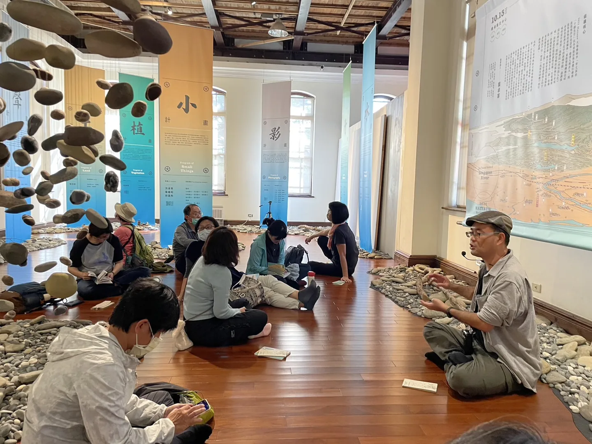
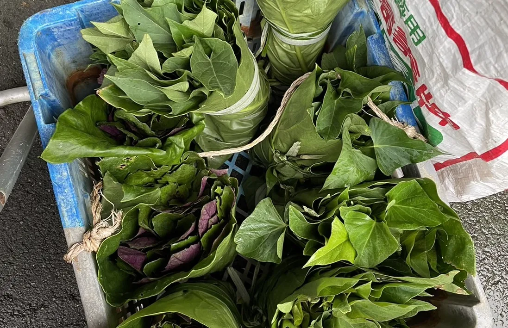

階段回顧｜2023 Q1 自由工作生存報告，休息和啟程
寫在前面：寫完覺得過於流水帳絮絮叨叨，慎讀！
2022消失的Q4
上一次寫的是2022 Q3，消失的 Q4 發生什麼事呢？找工作去了～
上一份正職工作離職之後，到 Q4 滿一週年，該嘗試的都嘗試了、工作也大多告一段落，現實面就是「要入不敷出了！」於是開始找工作。但磕磕碰碰，投得不多、走到面試這步的也不多，自己對於該選擇一份怎樣的工作還是躊躇不定，所幸在年底有一次朋友引介的簡單對談，雖然沒講到太多細節，但感覺會是個機會。
一月
找工作的時點尷尬、時逢過年提早、家人回國，果斷認真地放假、陪伴家人。
整理房間時發現自己高三考學測前去廟裡抽的籤，學生時期還懵懵懂懂，就是家人問要不要抽籤問問、無可無不可的心態，現在回頭看覺得很有趣。當時神明的意思是：「你自己都知道結果（會怎樣），何必來問我？」
再加上這一個月追詩人宋尚緯的故事連載（誤），自己兩三年前也有過博杯時和神明很有對話感的經驗，於是和家人臨時起意，趁著年後去老家附近的廟裡求支運勢籤。
長江風浪漸漸靜
于今得進可安寧
必有貴人相扶助
凶事脫出見太平
我想對前方黯淡不明的我來說，這支籤真是富有安慰的效果。
二月
年後，延續年前的簡單對談，敲定了年度合作的專案工作自三月開始，收入有了著落，也定調了今年的生活。這個新工作在新竹，一個我全然陌生的地方，2月一半時間在認識新竹，找資料做功課，另一半在準備自己的心、對這一年的規劃。
設定了「工作及做自己想做的事」的時間，一週必須達50小時，寫字、看書、思考人生和自己，持續有產出，我想如果想要有點「成果」，平均一天7小時、或是工作日工作10小時應該是必須的，何況能做自己的事情讓我很快樂，快樂的時間應該不嫌多才對。
三月
開始每週兩次的台北新竹通勤，認識新同事們、熟悉合作的節奏，慢慢啟動專案，也意外地享受早起通勤的生活，七點起床、搭上八點半的車，在搖搖晃晃的車廂裡吃早餐、讀點書或聽podcast，一路往南前進，有別於雙北的陰鬱，總是有陽光明媚的窗景相伴。
一些活動
年末在美國念書的友人回國，一月初相約去了網美露營，頗有單純解鎖成就的感覺，環境設施「弄得很好」，彷彿露營的野外性質只是一種元素，只是另一種風格的旅宿。對我來說樂趣不高。
接續著是家姊友人來家裡玩，去年也有同樣的成員來過，跟著我媽做蘿蔔糕（大家對這個農事(?)體驗非常滿意），並因為「吃好道相報」今年又有新成員加入，還有遠從英國回國的朋友短暫停留，分享了協助難民的創業故事和現況，令人忍不住想：「他幾歲我幾歲、他在幹嘛我在幹嘛？」我在哪裡？我是誰？
一月中旬，有幸因為工作夥伴F邀請，跟到由策展人親自導覽《2022Mattauw大地藝術季：曾文溪的一千個名字》的團，先是帶我們去麻豆享用在地傳統市場美食，酒足飯飽後才驅車前往展場。這團成員是不同領域的教授大大（以及他們的朋友，如同我這樣的存在），不只是策展人的分享故事迷人，其他成員的延伸分享，也讓人從不同視角認識和反思，以及奇怪的知識增加了（咦）。

二月初文化領域的友人給了國際書展的票，很開心睽違不知道是兩年還三年，又一次見到吳明益老師，雖然時間短、分享得有點少，但還是覺得很開心、感覺得到溫暖的能量一直都在、一切都好，意外提到藻礁公投時，點出了所謂環保團體意見分歧的原因，雖然我可能只算半個（甚至不到）環保團體人士，但還是為這個「團體」感到一種被安慰、被同理，有機會讓其他人了解到這樣狀況的感動。這次在書展貫徹了不買實體書、段捨離的自我約定，記錄了幾本感興趣的書，後來買了電子書。閱讀進度緩慢，《人慈》很好讀、收獲也多，《物裡學》不是我的菜。
二月中旬接續去了台北國際烘焙暨設備展，閉展的最後1.5小時匆匆逛過，買到了幾年前在觀望的台灣品牌「香草農夫」，以台灣自產的香草豆筴做的香草醬。烘焙展區（吃東西的）的地方都是人，對人群排斥的我來說覺得有點壓力，因為很少有機會逛這種類型的展，總覺得早該預見這種情況；烘焙機具設備區挺有趣的，看見大量製造的機具能夠做到什麼程度、很開眼見。
三月先是跑去社創基地聽《探索永續職涯的 N 種可能：School 28 第三屆徵件暨社群聯合徵才活動》的說明和分享，心得寫在另一篇，不確定自己想要「得到什麼」，但就是以一種找靈感的心情去聽聽看。現在想來或許沒有得到什麼立刻實用的東西，但對心靈的安定頗有助益，看見別人做著喜歡的事、勇敢而熱情的前進，希望自己現在看起來也同樣是那個模樣，或未來可以成為。
三月中去宜蘭找以前的工作夥伴聚餐，前一天晚上被帶去完全不認識的地方阿嬤家蹭了一頓飯、一起在老厝（很像小時候的爺爺家！）包草仔粿，為隔日的市集做準備。隔天幫忙當市集的工作人員、賣山產野菜，回想了才發現默默解了市集擺攤的成就！

一些自己的事
「段捨離」是今年希望可以做到的事情，這一季在線上賣場上架了一些二手書、緩慢地賣出了幾本（很意外好舊好舊的語言教科書超快賣掉，我當年很認真上課所有滿滿筆記，對此感到不好意思），也特別找了適合的單位捐出自己不再穿的衣服（至少在雙北，舊衣回收箱是不同單位認養(?)的），繼續出清中。
去年十一月開始，因為半腱肌和半膜肌拉傷，停掉了所有運動習慣（其實也就只有抱石啦），以每週規律地復健取而代之，還解鎖了打葡萄糖和震波治療。三月覺得身體停太久，開始以省交通費之名，到河濱騎Ubike，意外地享受這個過程。不過不得不說，西門到大稻埕那段河堤因為和機汽車道過於接近，榮登最不喜歡的一段路程。
三月重啟抱石習慣、慢慢找回身體，因為時間安排的關係改去了新竹的岩館，接觸到一些新朋友，在已知有機會、但偶然的情況下碰到了楊宗翰（空屋筆記-免費的自由臉書專頁經營者），一時之間沒做出任何反應。該做出什麼反應呢？告訴他「我從六七年前就有在看你的文章哦！」，然後呢？於是碰到了好幾次、還一起抱石，才在某次認真閒聊時忽然很尷尬地說了出口。
如果要用一個詞代表2023的Q1，大概就是「滿足」，有很多一起玩樂、一起學習、一起工作的夥伴。
也很開心這個幸福感，持續到這篇完稿的五月。